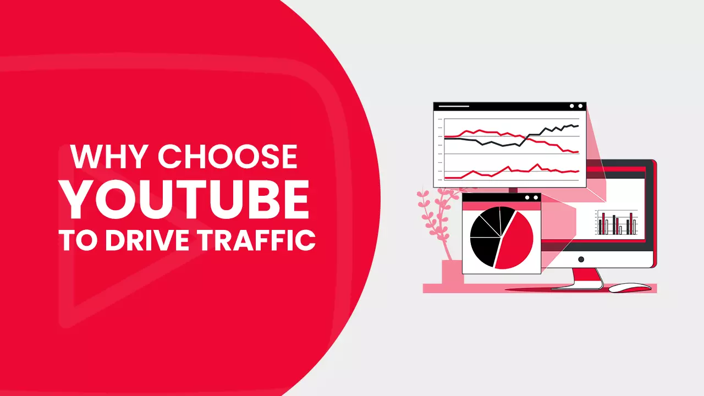
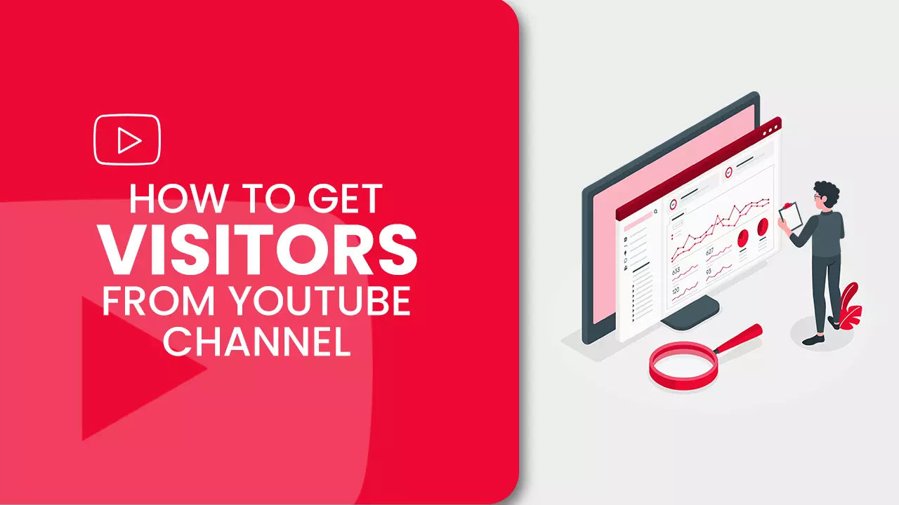
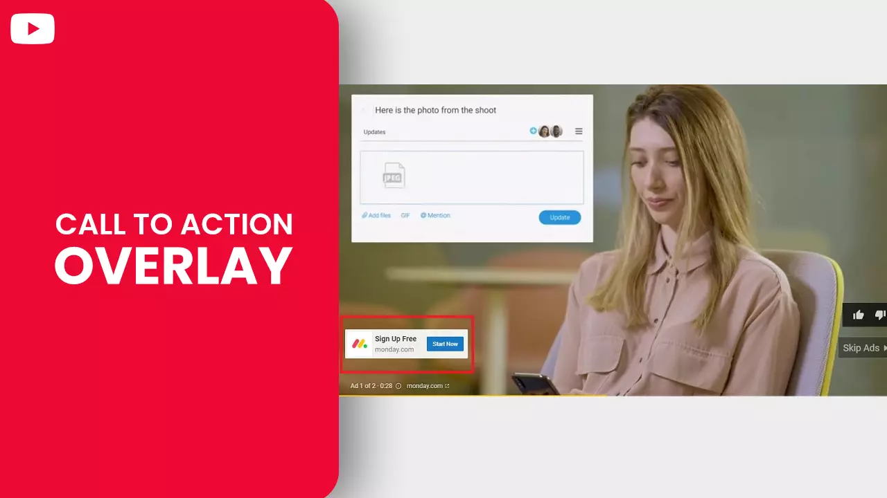
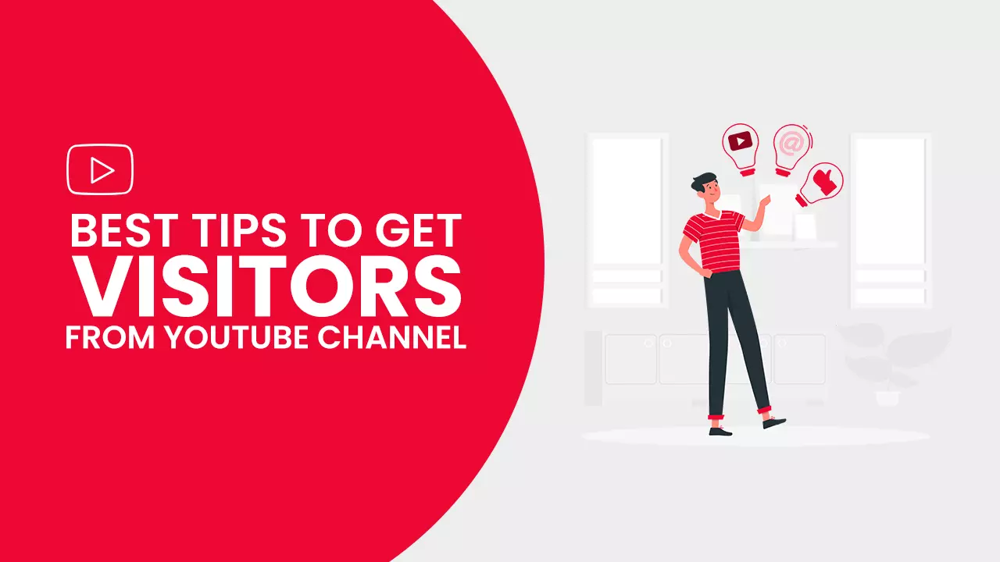
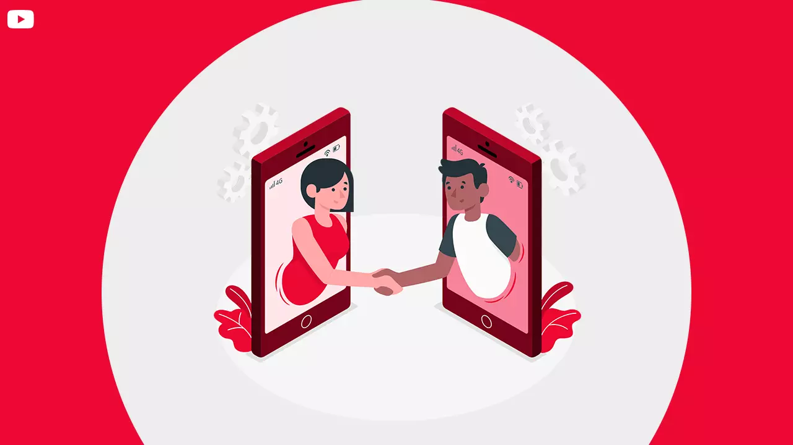
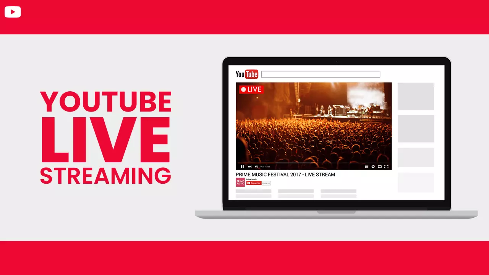
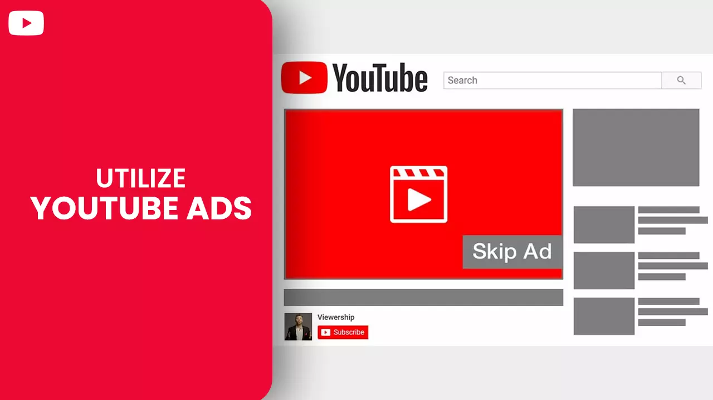

Contents
- 1. Why Choose YouTube to Drive Traffic?
- 2. How to Get Visitors from YouTube Channel
- 3. Use the description on your video
- 4. Call to action overlay
- 5. Best Tips on How to Get Visitors from YouTube Channel
- 6. Collaborate with fellow creators
- 7. YouTube live streaming
- 8. YouTube Premier
- 9. Utilize YouTube ads
Why Choose YouTube to Drive Traffic?

The video streaming platform gets 2 + billion users every month it is safe to say that YouTube has rightfully earned its place as the second-largest search engine on the planet, second only to its parent company Google.You are dreadfully mistaken if you think only popstars or comedians hold the monopoly over YouTube. Brands also capitalize on YT to promote and sell their offerings—70% of users brought from a brand after witnessing the product first on YouTube.With the right strategies, marketers can discover the platform's untapped potential that can help grow their brand.You can enjoy many benefits, such as:
-
Your brand can gain exposure through YouTube.
-
Since Google owns YouTube, your content can get indexed and categorized into Google's SERPs.
-
You can also insert your video into blog articles.
-
YouTube has in-built apparatus - enabling creators to share videos across their social media handles easily.
When a particular topic or concept goes viral, creators immediately look to jump on the bandwagon and ride the coattails. But you will soon come to realize that success depends on quality and not quantity. You could receive millions of views on your video portraying a viral concept, but it is all for naught if no one takes action that gets you closer to your goal. You should structure your video with one target in mind - drive traffic to your website.YouTube algorithm makes sure that only videos that bring value to its users are promoted; if your video checks all the quality boxes of YT standard - your content will be seen by new viewers. When an individual comes to your landing page via your video, he would be more determined to take your desired action - leading to a higher conversion rate.As part of their marketing strategy, YouTuber also chooses to buy YouTube subscribers in order to drive traffic from YouTube to their website.
How to Get Visitors from YouTube Channel

-
Provide a reason for the audience to click through
The need to act is inherent within each individual. Still, the laid-back attitude of a person often acts as a barrier that prevents them from taking action - This is true for your video audience.You have to provide an initiative to your viewer by using a relevant lead magnet, empowered with a solid call to action inserted within your content.You can redirect viewers to a landing page by highlighting the value they will receive by coming to your website. The benefits you offer should be relevant to the video your audience is currently watching.A good call to action is one that you can wrap up in a few sentences. A practical example can be as follows, "We hope you like our video on Google analytics for beginners, visit www.learnanalytics.com and get a free e-book copy of our 6-part guide on how to get traffic on website from YouTube.
-
Use the description on your video
The more videos you have, the more avenues you have to create backlinks to your website. Each video you post has a dedicated description box that you can use to provide links to pages on your website. Your viewers will look at the description as the primary source for your social and web links.The probability of your links getting clicked on increases when you keep them higher up in your description. Avoid terrible user experience by using links relevant to your uploaded video. Also, use links with "http//" to ensure easy user redirection without much hassle.One major drawback of placing your link at the start is that your link will show up in the SERPs as your video's snippet, which can harm the video click-through rate.
-
Channel art link
One way to get YouTube traffic to your website is by utilizing the header image. YT channel art or banner is a visual graphic medium covering the top portion of a channel page - this is usually used for branding. YouTube allows you to place a bunch of links on the bottom left corner of your header. If your goal is to drive traffic to your website, then one of those links should point to your landing page.
-
User cards and end screens
You can set YouTube cards to appear anytime during your video - they show up on the top left side of the video display and contains clickable links. One of the links can be of leading to your website.Use cards combined with a powerful CTA - you can draw viewer attention verbally or with some gesture. You can also utilize animation like an arrow pointing towards the card.End-screen has a close resemblance to cards, but as the name suggests, the screen pops up at the end of your video. You won't be able to utilize end screens if you are not part of the YouTube partner program and do not possess an approved merchandise or e-commerce website.If you are eligible, we suggest using an end screen in every video - they can significantly improve traffic flow to your website, merchandise, and e-commerce store. You can use tools like VidIQ to copy and paste end screens (and cards) to all your videos.
-
Call to action overlay

Another way to redirect your YT traffic to your website is by using a feature seldomly known to many, which cashed the call-to-action overlay.The overlay is a banner that takes up the lower their spot on your video. You have creative freedom - you can decide the thumbnail image to use and the destination you want to send your visitors. We strongly suggest utilizing this feature; not doing so means losing out on some profitable traffic. You need to have an account on ads.youtube.com to avail the call-to-action overlay feature.
Best Tips on How to Get Visitors from YouTube Channel

-
Engage with your audience
Want to know how to promote your website from YouTube? – the key is to interact with your target visitors. YouTube is often compared to Instagram, Twitter, and Facebook. But it wouldn't be right to do so.People come to YouTube for different reasons. YouTube, the second largest search engine on the planet, enjoys a growing, active community of users who engage with content via likes/dislikes, subscriptions, shares, and most importantly, comments.Brands acquire variable insights by analyzing the interactions they receive from their target audience. YT studio also allows creators to filter comments based on a topic of choice to discover new avenues that can drive more traffic to their merchandise and e-commerce stores.
-
Collaborate with fellow creators

Teaming up with other creators within your need is a traditional way to reach new potential subscribers or customers. Collaboration enables YouTubers to share traffic and redirect audiences to their channels or websites.Collaboration is a time-tested method utilized for scoring new visitors and garnering trust from the audience towards the creators. People will tend to cosy up to someone when they see their trusted creators vouching for them.
-
YouTube live streaming

YouTube live streams are turning into a popular medium known for high audience turnover. Especially now, with the ongoing pandemic, brands prefer interacting with their audience via live streams.From the 100 high-performing YouTube live streams, 60 happened in the past two years. You definitely cannot sleep on this medium if you want to attain brand growth.But before you begin your broadcast trackback, recollect and attain clarity on why you choose this medium instead of a regular video. Livestreaming should give something to your audience that is not possible to obtain otherwise.You can try:
-
Q & A sessions
-
BTS content
-
Demonstrating product usage
-
One on one consulting
-
Webinars
-
Interviews
-
Giveaways and contests
Before you go live, there are some things you have to prepare beforehand:
-
Select the right keyword-optimized title that reflects the purpose of your live stream.
-
Prepare a script that highlights the key points that you are covering in your broadcast.
-
Please select up to 15 specific hashtags, website links and place them in front along with some vital information.
-
Prepare a solid CTA that compels your live stream audience to take action.
-
Last but not least, prepare a thumbnail of 1280 X 720 px, keep the width to at least 640px.
Following the above steps will help you drive traffic from YouTube to your website.
-
YouTube Premier
Just like YT live streaming, you can interact with your audience in real-time via YouTube Premiere. You can use this feature to bring traffic to your website. YouTubers participate in Q&A sessions, do live product demonstrations and provide links to a landing page.Compared to other forms of engagement, YouTube premieres facilitate more intimate brand-customer interactions. Hence all resources referred by the creator should bring value to the audience.One of the perks of using the premiere feature is that participants of the event receive a transcript of the chat - this is a win for the creators. The audience can later refer to the copy, which already consists of links put up by the creator during the live event.
-
Utilize YouTube ads

All the above methods are organic; thus, they allow you to get YouTube traffic for free. Hence a significant time will pass until you start seeing results. On the other hand, YouTube ads speed up the process when it comes to directing traffic to your website. YouTube has turned out to be a major promotional hub for businesses. YT made 5 billion in ad revenue in Q3 of 2020 Skippable video ads, non-skippable video ads, bumper ads, video display ads, overlay ads, etc., are some of the ad formats you can use. YouTube is also the most used channel for video marketing – utilized by 55% of all marketers on the platform.We hope you gained valuable insight on how to promote your website through YouTube. Please do check out more articles on our website.Feel free to share